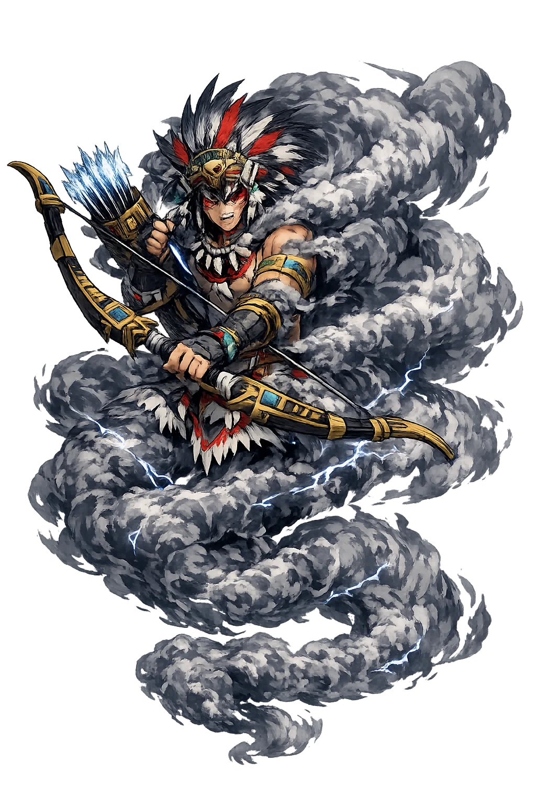
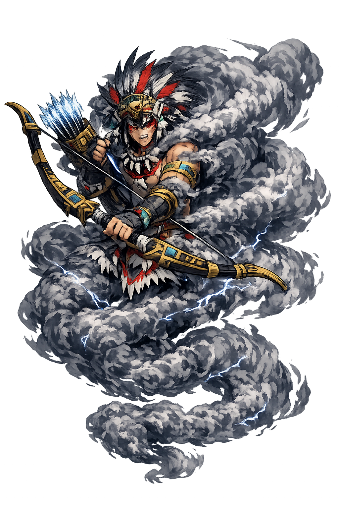

The Authentic Orthography
Clouds, Hunting, the Milky Way · "Cloud Serpent" — god of the hunt, of clouds, and of the starry road

Unicode restoration and ASCII comparison
Mixcōātl
The name survives only in scholarly transliteration. Mixcōātl is the standard Nahuatl romanisation, documented in academic sources — “"Cloud Serpent" — god of the hunt, of clouds, and of the starry road”. Its macron-length vowels preserve distinctions lost in plain ASCII.
No indigenous writing system is securely attested for individual nahuatl names. The form shown is a modern scholarly transliteration.
mixcoatl
Reduced to plain mixcoatl, the name loses everything that made it specific: macron-length vowels. What remains is an ASCII string that machines can parse but that no longer speaks with its original voice.
Mixcōātl
The Unicode restoration recovers what ASCII flattened. Mixcōātl restores macron-length vowels, returning the name to its original written dignity. The domain encodes to Punycode, but the browser displays the truth.
Mixcōātl.com → xn--mixctl-6za12d.com
The non-ASCII characters in Mixcōātl are encoded while the ASCII remains visible. To the DNS, it is Punycode. To humanity, it is Mixcōātl.
How Mixcōātl is preserved in writing
No indigenous writing system is securely attested for individual nahuatl names. The form shown is a modern scholarly transliteration.
Contribute scholarly provenance →Owned, ideal, and ASCII forms of Mixcōātl
Mixcōātl
The live temple domain — mixcōātl.com.
mixcoatl
The plain ASCII fallback — what DNS and legacy systems see.
How Mixcōātl was spoken
Hunting, Stars, and the Milky Way
Mixcōātl is the Aztec god of the hunt and the starry road: the cloud-serpent who slides along the Milky Way, patron of the nomadic hunters who became the Aztecs' ancestors — the oldest god of the road that leads to the empire.
His body in the sky: the star-serpent, the road of the night.
Patron of hunters — his bow and net, the Chichimec tool-kit.
The weather-serpent: rain and sky in motion.
His other name — the ancient hunting god of the Chichimecs.
Stories of Mixcōātl
Mixcōātl's myths are the Aztec origin-story in one figure: the wilderness god who taught the city-builders how to hunt, and whose star-road they followed south.
The Chichimec tribes who became the Aztec nobility followed his road: the Milky Way, which the Nahuatl called Mixcōātl, the Cloud Serpent, slithering nightly across the sky. The migrating peoples read their path in his body — the desert crossed by the serpent's light — and when they founded Tenochtitlan, they enthroned the wilderness-guide among the city's great gods, the god of where they had come from.
As Camaxtle, he gave the wandering tribes the bow and the fire-drill — the two technologies of the road. The Aztec coronation rites remembered: the new Tlatoani dressed as Mixcōātl for the warrior's investiture, and the festival of Quecholli ("the precious feather") honored him with the hunt's own weapons laid on his altar — the city's annual thanks to the god who fed it before it had fields.
The myth makes him father of the Centzon Huitznāhua — the Four Hundred Southerners, the star-host whom Coyolxāuhqui led against their mother when she bore Huitzilopochtli. The god of the hunt is thus also the father of the enemies of the sun: the Aztec sky-war between day and night is, in his household, a family quarrel, written nightly across his own starry body.
Mixcōātl is the god of the journey that made you. Every settled people remembers, somewhere, the road: the serpent in the night sky that was followed here. He asks the traveler's question, which is also the nation's and the individual's: what star did your ancestors follow — and does it still move, when you look up, the way it moved for them?
Enter Extended Lore